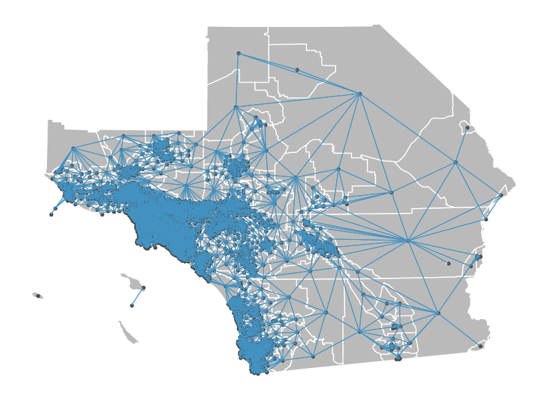
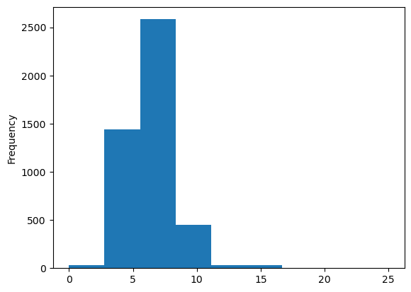
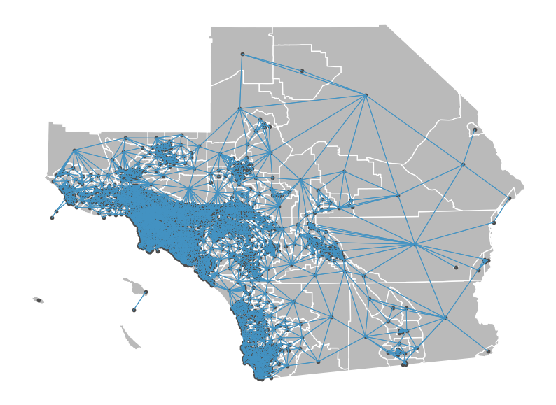
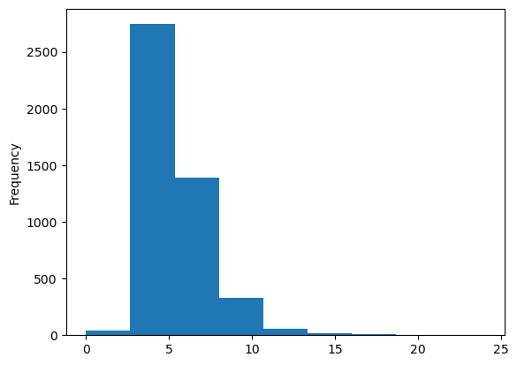
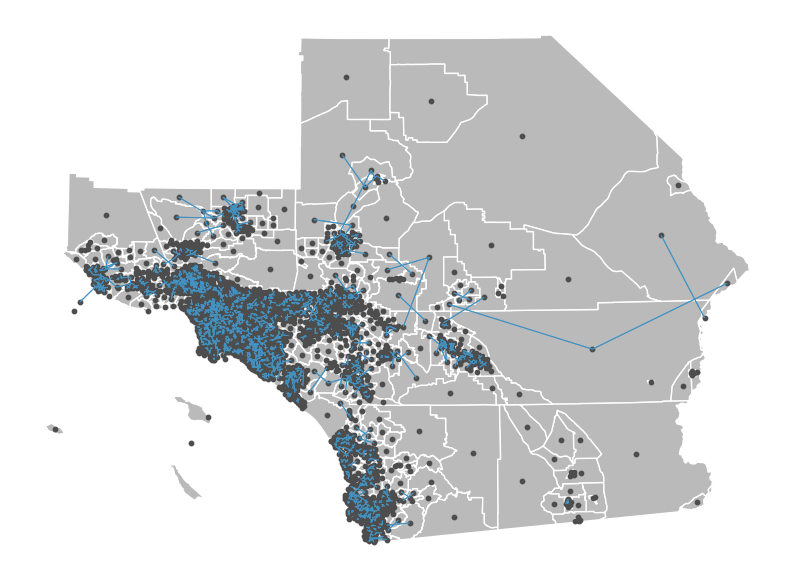
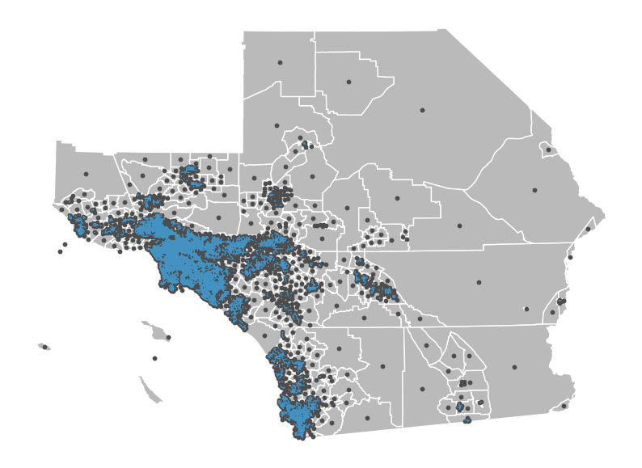
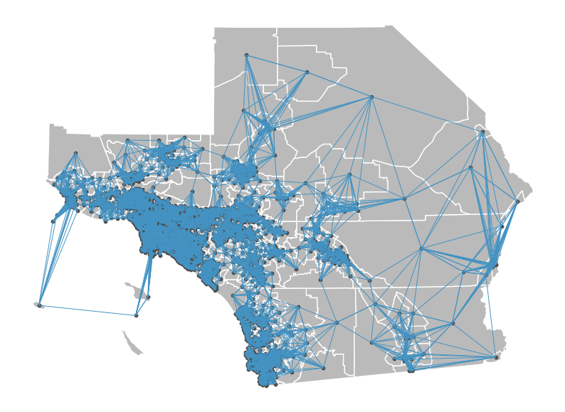
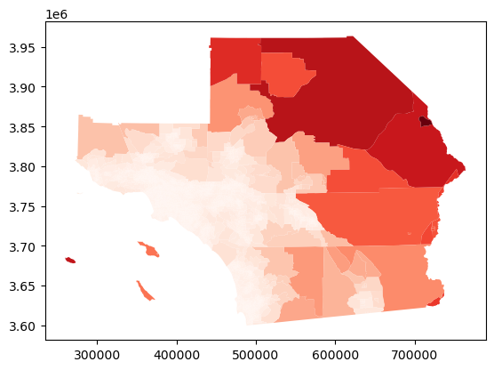
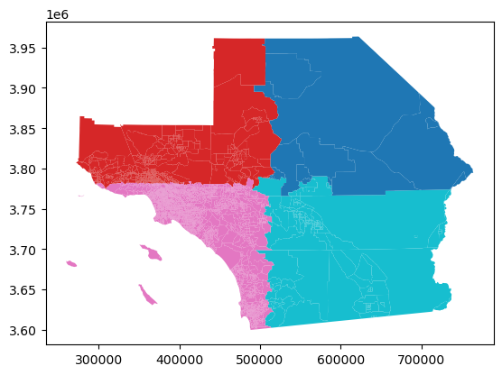
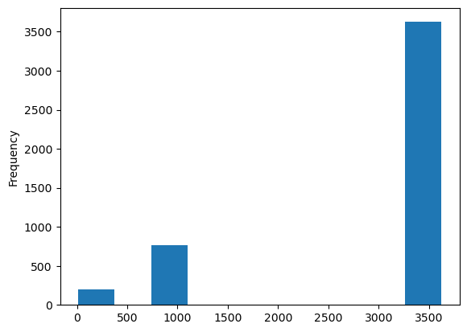

import warnings
warnings.simplefilter("ignore")Spatial Weights
Spatial Weights
Spatial weights are mathematical structures used to represent spatial relationships. Many spatial analytics, such as spatial autocorrelation statistics and regionalization algorithms rely on spatial weights. Generally speaking, a spatial weight \(w_{i,j}\) expresses the notion of a geographical relationship between locations \(i\) and \(j\). These relationships can be based on a number of criteria including contiguity, geospatial distance and general distances.
libpysal offers functionality for the construction, manipulation, analysis, and conversion of a wide array of spatial weights.
We begin with construction of weights from common spatial data formats.
import libpysal
from libpysal.weights import Queen, Rook, KNN, Kernel, DistanceBand
import numpy as np
import geopandas
import pandas
%matplotlib inline
import matplotlib.pyplot as pltfrom splot.libpysal import plot_spatial_weightsThere are functions to construct weights directly from a file path.
Weight Types
Contiguity
Queen Weights
A commonly-used type of weight is a queen contigutiy weight, which reflects adjacency relationships as a binary indicator variable denoting whether or not a polygon shares an edge or a vertex with another polygon. These weights are symmetric, in that when polygon \(A\) neighbors polygon \(B\), both \(w_{AB} = 1\) and \(w_{BA} = 1\).
To construct queen weights from a shapefile, we will use geopandas to read the file into a GeoDataFrame, and then use libpysal to construct the weights:
path = "~/data/scag_region.parquet"
df = geopandas.read_parquet(path)
df.head()| geoid | n_asian_under_15 | n_black_under_15 | n_hispanic_under_15 | n_native_under_15 | n_white_under_15 | n_persons_under_18 | n_asian_over_60 | n_black_over_60 | n_hispanic_over_60 | ... | year | n_total_housing_units_sample | p_nonhisp_white_persons | p_white_over_60 | p_black_over_60 | p_hispanic_over_60 | p_native_over_60 | p_asian_over_60 | p_disabled | geometry | |
|---|---|---|---|---|---|---|---|---|---|---|---|---|---|---|---|---|---|---|---|---|---|
| 0 | 06037128702 | 58.0 | 0.0 | 223.0 | 0.0 | 475.0 | 986.0 | NaN | NaN | NaN | ... | 2010 | 2903.0 | 64.726214 | NaN | NaN | NaN | NaN | NaN | NaN | POLYGON ((-118.44870 34.16485, -118.43997 34.1... |
| 1 | 06037131600 | 83.0 | 62.0 | 777.0 | 0.0 | 135.0 | 1355.0 | NaN | NaN | NaN | ... | 2010 | 1487.0 | 28.679979 | NaN | NaN | NaN | NaN | NaN | NaN | POLYGON ((-118.56229 34.22033, -118.55792 34.2... |
| 2 | 06037134104 | 287.0 | 17.0 | 816.0 | 0.0 | 61.0 | 1323.0 | NaN | NaN | NaN | ... | 2010 | 1388.0 | 14.846188 | NaN | NaN | NaN | NaN | NaN | NaN | POLYGON ((-118.57976 34.21558, -118.57539 34.2... |
| 3 | 06037134304 | 90.0 | 24.0 | 298.0 | 0.0 | 89.0 | 520.0 | NaN | NaN | NaN | ... | 2010 | 928.0 | 33.378933 | NaN | NaN | NaN | NaN | NaN | NaN | POLYGON ((-118.61472 34.21952, -118.61039 34.2... |
| 4 | 06037242000 | 0.0 | 229.0 | 681.0 | 0.0 | 0.0 | 1164.0 | NaN | NaN | NaN | ... | 2010 | 1054.0 | 0.058565 | NaN | NaN | NaN | NaN | NaN | NaN | POLYGON ((-118.25416 33.93882, -118.25413 33.9... |
5 rows × 194 columns
df = df.to_crs(26911) #UTM zone 11NqW = Queen.from_dataframe(df)qW<libpysal.weights.contiguity.Queen at 0x7d1d8341d930>All weights objects have a few traits that you can use to work with the weights object, as well as to get information about the weights object.
To get the neighbors & weights around an observation, use the observation’s index on the weights object, like a dictionary:
qW[155] #neighbors & weights of the 156th observation (0-index remember){4528: 1.0, 547: 1.0, 2133: 1.0, 2744: 1.0}By default, the weights and the pandas dataframe will use the same index. So, we can view the observation and its neighbors in the dataframe by putting the observation’s index and its neighbors’ indexes together in one list:
self_and_neighbors = [155]
self_and_neighbors.extend(qW.neighbors[155])
print(self_and_neighbors)[155, 4528, 547, 2133, 2744]and grabbing those elements from the dataframe:
df.loc[self_and_neighbors]| geoid | n_asian_under_15 | n_black_under_15 | n_hispanic_under_15 | n_native_under_15 | n_white_under_15 | n_persons_under_18 | n_asian_over_60 | n_black_over_60 | n_hispanic_over_60 | ... | year | n_total_housing_units_sample | p_nonhisp_white_persons | p_white_over_60 | p_black_over_60 | p_hispanic_over_60 | p_native_over_60 | p_asian_over_60 | p_disabled | geometry | |
|---|---|---|---|---|---|---|---|---|---|---|---|---|---|---|---|---|---|---|---|---|---|
| 155 | 06037552302 | 26.0 | 80.0 | 630.0 | 0.0 | 0.0 | 913.0 | NaN | NaN | NaN | ... | 2010 | 1268.0 | 22.060410 | NaN | NaN | NaN | NaN | NaN | NaN | POLYGON ((401577.943 3752226.320, 401578.535 3... |
| 4528 | 06037552400 | 0.0 | 20.0 | 670.0 | 0.0 | 24.0 | 821.0 | NaN | NaN | NaN | ... | 2010 | 588.0 | 5.576363 | NaN | NaN | NaN | NaN | NaN | NaN | POLYGON ((401878.957 3751827.308, 402203.594 3... |
| 547 | 06037552301 | 59.0 | 103.0 | 1079.0 | 5.0 | 0.0 | 1777.0 | NaN | NaN | NaN | ... | 2010 | 1272.0 | 8.472352 | NaN | NaN | NaN | NaN | NaN | NaN | POLYGON ((400855.726 3753114.791, 400857.855 3... |
| 2133 | 06037552200 | 38.0 | 141.0 | 1484.0 | 0.0 | 52.0 | 2235.0 | NaN | NaN | NaN | ... | 2010 | 1902.0 | 6.858581 | NaN | NaN | NaN | NaN | NaN | NaN | POLYGON ((399998.860 3752819.258, 400004.819 3... |
| 2744 | 06037504102 | 0.0 | 0.0 | 0.0 | 0.0 | 0.0 | 0.0 | NaN | NaN | NaN | ... | 2010 | 0.0 | NaN | NaN | NaN | NaN | NaN | NaN | NaN | POLYGON ((401631.531 3751829.535, 401878.957 3... |
5 rows × 194 columns
A full, dense matrix describing all of the pairwise relationships is constructed using the .full method, or when libpysal.weights.full is called on a weights object:
Wmatrix, ids = qW.full()
#Wmatrix, ids = libpysal.weights.full(qW)Wmatrixarray([[0., 0., 0., ..., 0., 0., 0.],
[0., 0., 0., ..., 0., 0., 0.],
[0., 0., 0., ..., 0., 0., 0.],
...,
[0., 0., 0., ..., 0., 0., 0.],
[0., 0., 0., ..., 0., 0., 0.],
[0., 0., 0., ..., 0., 0., 0.]])n_neighbors = Wmatrix.sum(axis=1) # how many neighbors each region hasn_neighbors[155]4.0qW.cardinalities[155]4Note that this matrix is binary, in that its elements are either zero or one, since an observation is either a neighbor or it is not a neighbor.
However, many common use cases of spatial weights require that the matrix is row-standardized. This is done simply in PySAL using the .transform attribute
qW.transform = 'r'('WARNING: ', 4285, ' is an island (no neighbors)')Now, if we build a new full matrix, its rows should sum to one:
Wmatrix, ids = qW.full()Wmatrix.sum(axis=1) #numpy axes are 0:column, 1:row, 2:facet, into higher dimensionsarray([1., 1., 1., ..., 1., 1., 1.])Since weight matrices are typically very sparse, there is also a sparse weights matrix constructor:
qW.sparse<4580x4580 sparse matrix of type '<class 'numpy.float64'>'
with 29374 stored elements in Compressed Sparse Row format>qW.pct_nonzero #Percentage of nonzero neighbor counts0.14003356152628668Let’s look at the neighborhoods of the 101th observation
df.iloc[100]geoid 06037910606
n_asian_under_15 0.0
n_black_under_15 210.0
n_hispanic_under_15 757.0
n_native_under_15 3.0
...
p_hispanic_over_60 NaN
p_native_over_60 NaN
p_asian_over_60 NaN
p_disabled NaN
geometry POLYGON ((401275.2896923868 3825401.4434467247...
Name: 100, Length: 194, dtype: objectqW.neighbors[100][789, 790, 1991, 3676, 791]len(qW.neighbors[100])5df.iloc[qW.neighbors[100]]| geoid | n_asian_under_15 | n_black_under_15 | n_hispanic_under_15 | n_native_under_15 | n_white_under_15 | n_persons_under_18 | n_asian_over_60 | n_black_over_60 | n_hispanic_over_60 | ... | year | n_total_housing_units_sample | p_nonhisp_white_persons | p_white_over_60 | p_black_over_60 | p_hispanic_over_60 | p_native_over_60 | p_asian_over_60 | p_disabled | geometry | |
|---|---|---|---|---|---|---|---|---|---|---|---|---|---|---|---|---|---|---|---|---|---|
| 789 | 06037910605 | 14.0 | 161.0 | 860.0 | 0.0 | 115.0 | 1571.0 | NaN | NaN | NaN | ... | 2010 | 1295.0 | 19.775281 | NaN | NaN | NaN | NaN | NaN | NaN | POLYGON ((401288.903 3826196.619, 402103.760 3... |
| 790 | 06037910712 | 3.0 | 16.0 | 375.0 | 0.0 | 50.0 | 665.0 | NaN | NaN | NaN | ... | 2010 | 724.0 | 18.216033 | NaN | NaN | NaN | NaN | NaN | NaN | POLYGON ((402885.213 3824547.186, 402894.296 3... |
| 1991 | 06037910603 | 72.0 | 162.0 | 1465.0 | 0.0 | 321.0 | 2371.0 | NaN | NaN | NaN | ... | 2010 | 2001.0 | 21.765830 | NaN | NaN | NaN | NaN | NaN | NaN | POLYGON ((399656.096 3826203.299, 400480.138 3... |
| 3676 | 06037910711 | 50.0 | 440.0 | 1567.0 | 27.0 | 162.0 | 2650.0 | NaN | NaN | NaN | ... | 2010 | 2351.0 | 19.146422 | NaN | NaN | NaN | NaN | NaN | NaN | POLYGON ((402109.001 3827007.300, 402932.076 3... |
| 791 | 06037910715 | 67.0 | 352.0 | 1261.0 | 36.0 | 219.0 | 2282.0 | NaN | NaN | NaN | ... | 2010 | 1934.0 | 17.863582 | NaN | NaN | NaN | NaN | NaN | NaN | POLYGON ((400453.228 3824402.087, 400474.053 3... |
5 rows × 194 columns
plot_spatial_weights(qW, df)
By default, PySAL assigns each observation an index according to the order in which the observation was read in. This means that, by default, all of the observations in the weights object are indexed by table order.
pandas.Series(qW.cardinalities).plot.hist(bins=9)
qW.cardinalities.values()dict_values([9, 9, 4, 7, 7, 5, 5, 6, 5, 8, 9, 8, 4, 3, 5, 5, 6, 6, 4, 5, 5, 6, 7, 9, 6, 4, 7, 8, 7, 5, 7, 2, 6, 6, 8, 3, 7, 7, 5, 8, 6, 5, 5, 4, 6, 6, 7, 7, 4, 6, 7, 4, 5, 6, 13, 6, 7, 6, 8, 6, 6, 6, 2, 6, 6, 8, 6, 7, 7, 6, 3, 5, 6, 6, 3, 7, 6, 5, 5, 5, 8, 8, 6, 8, 9, 7, 7, 6, 7, 5, 5, 7, 7, 6, 5, 7, 8, 8, 4, 7, 5, 4, 4, 6, 9, 6, 6, 7, 4, 8, 6, 6, 5, 6, 6, 6, 6, 7, 6, 8, 6, 6, 6, 8, 6, 6, 5, 8, 4, 5, 7, 5, 5, 5, 5, 5, 2, 4, 4, 7, 6, 8, 6, 9, 4, 6, 7, 5, 5, 6, 6, 4, 8, 9, 7, 4, 8, 4, 6, 5, 5, 4, 5, 6, 7, 8, 4, 6, 5, 6, 6, 6, 4, 6, 7, 6, 5, 6, 7, 6, 7, 7, 7, 7, 3, 10, 6, 6, 7, 7, 5, 6, 7, 8, 6, 5, 9, 7, 9, 6, 6, 4, 6, 6, 5, 7, 7, 7, 6, 4, 7, 8, 7, 5, 6, 6, 4, 6, 6, 5, 9, 7, 5, 7, 4, 7, 7, 3, 6, 7, 5, 5, 6, 6, 5, 4, 6, 5, 5, 6, 5, 10, 4, 3, 6, 1, 8, 6, 4, 5, 5, 7, 6, 4, 7, 4, 5, 6, 6, 5, 10, 3, 5, 5, 9, 5, 7, 5, 5, 7, 5, 8, 4, 6, 5, 7, 7, 7, 5, 6, 7, 5, 3, 7, 5, 4, 6, 3, 5, 6, 5, 5, 5, 4, 4, 7, 7, 5, 5, 5, 7, 9, 6, 4, 4, 5, 7, 4, 4, 7, 4, 6, 6, 4, 8, 6, 7, 5, 8, 6, 7, 6, 8, 8, 4, 5, 7, 6, 3, 5, 5, 4, 6, 6, 7, 5, 5, 5, 3, 5, 7, 6, 8, 5, 5, 5, 7, 6, 6, 7, 3, 4, 8, 4, 7, 4, 6, 6, 4, 4, 4, 5, 3, 5, 6, 4, 6, 7, 8, 5, 6, 6, 6, 7, 5, 8, 5, 3, 5, 5, 6, 4, 7, 7, 7, 4, 6, 5, 6, 9, 4, 7, 5, 5, 5, 7, 4, 7, 8, 7, 7, 6, 5, 5, 7, 5, 9, 5, 5, 6, 4, 8, 6, 4, 5, 5, 5, 7, 6, 6, 3, 6, 7, 5, 4, 5, 5, 7, 7, 5, 4, 6, 6, 6, 5, 5, 5, 17, 7, 6, 6, 14, 5, 5, 6, 6, 4, 11, 7, 6, 4, 6, 5, 7, 6, 6, 4, 7, 4, 6, 4, 7, 7, 6, 8, 5, 6, 8, 6, 5, 8, 8, 6, 4, 5, 5, 3, 6, 4, 6, 6, 6, 5, 6, 4, 4, 6, 7, 7, 8, 4, 5, 17, 7, 5, 6, 5, 7, 8, 6, 4, 7, 5, 7, 6, 4, 4, 5, 5, 4, 4, 4, 5, 3, 5, 4, 5, 3, 4, 5, 7, 7, 4, 7, 5, 4, 5, 12, 9, 9, 5, 4, 6, 7, 6, 6, 3, 8, 4, 8, 4, 6, 8, 4, 6, 5, 9, 6, 7, 4, 4, 8, 7, 4, 8, 5, 5, 7, 6, 5, 7, 4, 8, 6, 5, 8, 6, 6, 6, 6, 4, 5, 6, 8, 5, 8, 5, 8, 5, 8, 8, 6, 8, 7, 6, 7, 6, 5, 5, 7, 9, 3, 6, 8, 8, 7, 8, 5, 4, 6, 5, 6, 9, 7, 6, 7, 8, 3, 6, 6, 4, 7, 6, 5, 3, 5, 5, 8, 6, 8, 3, 8, 6, 8, 6, 6, 5, 8, 4, 8, 8, 7, 4, 5, 6, 6, 7, 7, 7, 5, 7, 4, 8, 6, 8, 8, 6, 4, 5, 7, 6, 6, 7, 5, 7, 8, 4, 6, 7, 6, 6, 8, 7, 7, 4, 4, 8, 7, 7, 8, 11, 6, 7, 6, 10, 5, 6, 6, 6, 4, 5, 5, 8, 7, 4, 7, 6, 8, 6, 7, 6, 7, 7, 6, 6, 5, 6, 6, 6, 5, 7, 9, 4, 5, 6, 6, 5, 6, 7, 5, 10, 5, 7, 4, 5, 4, 5, 5, 5, 6, 10, 6, 6, 6, 5, 6, 7, 4, 4, 6, 6, 8, 6, 7, 8, 8, 6, 3, 5, 6, 5, 7, 5, 5, 7, 8, 6, 7, 5, 5, 6, 6, 6, 5, 6, 6, 8, 5, 8, 4, 6, 8, 4, 5, 3, 5, 5, 8, 5, 8, 7, 8, 7, 6, 10, 5, 7, 4, 4, 3, 9, 4, 6, 5, 4, 7, 7, 6, 9, 4, 6, 5, 5, 7, 5, 5, 9, 5, 6, 6, 5, 6, 5, 7, 5, 8, 8, 6, 7, 5, 7, 5, 5, 7, 7, 4, 7, 8, 6, 8, 7, 5, 7, 10, 5, 4, 7, 5, 6, 7, 7, 5, 5, 4, 6, 5, 6, 6, 7, 5, 7, 7, 6, 6, 5, 6, 4, 4, 6, 5, 6, 5, 6, 6, 5, 4, 5, 9, 9, 4, 5, 8, 6, 8, 5, 7, 7, 6, 6, 4, 9, 8, 6, 10, 5, 7, 6, 3, 6, 6, 8, 7, 5, 7, 5, 6, 8, 5, 6, 5, 5, 7, 4, 5, 4, 4, 5, 4, 5, 7, 5, 7, 6, 5, 7, 7, 6, 7, 6, 7, 7, 6, 7, 4, 4, 6, 7, 4, 6, 7, 8, 6, 8, 8, 2, 7, 4, 9, 5, 7, 7, 4, 6, 6, 4, 5, 5, 5, 9, 6, 8, 6, 9, 9, 7, 7, 5, 7, 5, 5, 5, 5, 4, 7, 6, 5, 6, 9, 6, 4, 6, 5, 6, 7, 6, 6, 4, 5, 3, 7, 4, 5, 6, 10, 4, 7, 6, 4, 6, 6, 8, 5, 6, 6, 7, 6, 6, 4, 7, 6, 7, 8, 6, 6, 7, 9, 6, 6, 9, 6, 8, 3, 5, 7, 8, 9, 7, 5, 5, 7, 7, 7, 6, 5, 6, 7, 7, 3, 6, 6, 5, 9, 5, 8, 7, 5, 6, 5, 7, 7, 7, 6, 6, 8, 6, 5, 6, 7, 3, 6, 6, 8, 7, 6, 8, 5, 7, 6, 5, 6, 7, 4, 4, 7, 5, 20, 6, 5, 6, 6, 6, 7, 5, 6, 7, 5, 4, 5, 4, 9, 4, 7, 6, 8, 7, 5, 5, 5, 5, 7, 5, 6, 6, 5, 3, 5, 4, 6, 8, 6, 2, 7, 5, 5, 5, 6, 8, 7, 7, 7, 8, 7, 6, 5, 5, 6, 5, 6, 5, 7, 6, 7, 4, 6, 4, 5, 7, 5, 9, 6, 7, 7, 5, 10, 8, 5, 5, 5, 7, 6, 6, 7, 6, 7, 6, 5, 4, 5, 5, 6, 7, 10, 4, 4, 6, 6, 8, 7, 5, 6, 6, 9, 5, 5, 6, 6, 8, 5, 7, 6, 4, 9, 7, 5, 5, 6, 5, 16, 5, 4, 6, 4, 8, 8, 6, 6, 7, 7, 5, 10, 7, 6, 7, 6, 7, 5, 7, 5, 7, 6, 7, 6, 4, 8, 6, 7, 6, 6, 5, 4, 4, 5, 9, 4, 8, 8, 7, 6, 6, 11, 6, 4, 6, 6, 4, 7, 5, 6, 7, 5, 5, 3, 7, 5, 5, 3, 6, 6, 9, 5, 8, 8, 3, 6, 5, 5, 8, 5, 5, 7, 5, 9, 8, 9, 6, 6, 6, 7, 8, 8, 7, 6, 7, 9, 4, 8, 9, 9, 7, 7, 8, 6, 5, 6, 5, 5, 6, 5, 5, 8, 6, 7, 5, 7, 4, 7, 5, 10, 7, 8, 5, 6, 9, 9, 9, 10, 4, 5, 6, 9, 4, 5, 6, 6, 5, 6, 8, 9, 9, 9, 10, 7, 9, 5, 3, 6, 7, 7, 9, 7, 8, 9, 8, 7, 8, 6, 7, 6, 9, 9, 5, 8, 3, 3, 7, 5, 7, 9, 9, 8, 7, 7, 10, 6, 8, 7, 6, 8, 6, 8, 5, 5, 5, 4, 5, 7, 8, 9, 7, 3, 6, 4, 7, 7, 7, 6, 10, 6, 7, 8, 7, 10, 9, 7, 6, 8, 5, 7, 7, 6, 5, 5, 5, 7, 5, 6, 4, 5, 6, 4, 9, 7, 4, 6, 4, 9, 9, 6, 8, 5, 9, 6, 9, 6, 7, 7, 6, 5, 10, 10, 7, 7, 7, 7, 8, 6, 3, 7, 4, 5, 6, 4, 10, 9, 5, 8, 6, 9, 5, 7, 5, 7, 5, 8, 8, 9, 9, 13, 7, 7, 8, 6, 1, 7, 6, 5, 6, 7, 9, 5, 7, 6, 4, 4, 3, 7, 8, 6, 7, 8, 6, 4, 6, 9, 8, 6, 6, 6, 8, 7, 7, 5, 5, 2, 3, 7, 6, 6, 6, 8, 5, 5, 6, 4, 5, 7, 8, 6, 9, 4, 5, 5, 3, 5, 10, 5, 15, 4, 6, 9, 8, 8, 7, 5, 8, 7, 8, 9, 8, 7, 5, 6, 8, 4, 9, 6, 9, 6, 6, 6, 5, 7, 10, 11, 11, 6, 5, 6, 7, 4, 5, 11, 16, 5, 7, 9, 7, 6, 7, 7, 6, 5, 9, 6, 10, 7, 5, 7, 6, 5, 3, 8, 3, 11, 5, 5, 9, 9, 7, 6, 6, 8, 10, 6, 10, 4, 8, 7, 4, 7, 4, 5, 9, 4, 5, 9, 9, 6, 6, 8, 9, 9, 4, 7, 10, 16, 7, 11, 7, 11, 5, 8, 9, 5, 11, 7, 5, 7, 5, 5, 7, 8, 9, 5, 11, 11, 7, 8, 6, 5, 6, 5, 7, 9, 4, 7, 8, 7, 8, 4, 6, 7, 9, 9, 8, 6, 4, 7, 4, 6, 7, 6, 8, 6, 7, 4, 8, 5, 7, 7, 10, 7, 7, 6, 4, 6, 6, 13, 3, 8, 9, 6, 4, 6, 5, 6, 12, 5, 2, 6, 5, 7, 6, 7, 8, 5, 7, 4, 6, 7, 10, 3, 17, 10, 8, 6, 5, 7, 14, 1, 12, 8, 4, 4, 8, 8, 4, 8, 6, 8, 6, 5, 3, 8, 6, 7, 8, 6, 9, 8, 5, 11, 5, 3, 7, 5, 4, 5, 3, 7, 7, 6, 5, 8, 2, 5, 6, 11, 8, 6, 6, 7, 6, 7, 6, 6, 4, 4, 6, 9, 6, 9, 6, 5, 4, 3, 5, 8, 7, 10, 4, 6, 7, 4, 6, 6, 4, 6, 4, 8, 6, 10, 8, 5, 8, 6, 4, 6, 6, 5, 11, 4, 7, 8, 7, 6, 5, 5, 10, 16, 8, 5, 7, 9, 3, 7, 5, 3, 4, 8, 6, 6, 7, 6, 9, 7, 7, 6, 6, 11, 7, 7, 8, 6, 6, 7, 4, 7, 6, 3, 7, 7, 6, 8, 15, 7, 6, 4, 6, 9, 6, 6, 6, 10, 7, 8, 4, 9, 11, 6, 6, 6, 4, 11, 6, 5, 5, 5, 5, 7, 5, 5, 5, 4, 4, 8, 4, 6, 5, 7, 8, 6, 7, 5, 6, 7, 7, 6, 4, 10, 5, 6, 7, 5, 4, 7, 5, 6, 5, 7, 5, 5, 10, 6, 5, 5, 3, 7, 5, 6, 6, 6, 7, 5, 4, 7, 6, 11, 6, 8, 6, 9, 5, 14, 4, 5, 13, 8, 6, 7, 4, 7, 5, 9, 5, 8, 4, 7, 7, 8, 7, 4, 7, 5, 10, 8, 9, 5, 7, 6, 4, 7, 8, 8, 12, 7, 6, 8, 10, 5, 7, 6, 6, 6, 5, 5, 5, 6, 9, 5, 7, 4, 7, 8, 5, 7, 6, 5, 7, 7, 4, 4, 6, 7, 7, 6, 8, 6, 5, 4, 6, 5, 5, 4, 6, 6, 6, 7, 5, 4, 6, 3, 6, 7, 1, 7, 11, 4, 4, 12, 7, 6, 8, 5, 7, 8, 3, 6, 5, 5, 5, 9, 6, 9, 6, 5, 3, 7, 6, 8, 8, 9, 7, 5, 7, 6, 6, 5, 5, 10, 4, 8, 5, 8, 4, 5, 6, 5, 14, 8, 1, 5, 6, 7, 8, 10, 4, 7, 5, 9, 5, 5, 7, 4, 4, 7, 5, 8, 6, 9, 6, 8, 7, 4, 6, 4, 7, 5, 4, 6, 3, 7, 6, 6, 7, 11, 8, 6, 7, 8, 5, 7, 7, 9, 6, 5, 6, 6, 8, 6, 9, 7, 7, 7, 8, 5, 5, 5, 9, 6, 5, 4, 7, 7, 5, 7, 5, 5, 6, 8, 6, 5, 6, 4, 6, 6, 7, 7, 5, 6, 9, 6, 5, 6, 5, 8, 9, 7, 11, 7, 11, 15, 6, 7, 8, 3, 10, 8, 10, 8, 8, 4, 6, 5, 7, 6, 5, 6, 6, 7, 5, 9, 9, 9, 7, 11, 6, 6, 6, 5, 6, 6, 8, 6, 7, 5, 7, 8, 10, 10, 9, 7, 3, 9, 10, 7, 7, 6, 10, 6, 6, 7, 4, 7, 4, 5, 6, 6, 5, 5, 7, 8, 7, 4, 7, 7, 7, 7, 7, 7, 7, 6, 7, 6, 7, 7, 8, 7, 7, 5, 8, 10, 8, 7, 7, 6, 6, 8, 7, 6, 5, 6, 6, 9, 6, 2, 7, 7, 7, 7, 6, 7, 7, 4, 9, 12, 5, 5, 5, 5, 4, 9, 5, 7, 6, 7, 6, 4, 8, 7, 7, 7, 3, 5, 6, 5, 5, 7, 8, 6, 9, 4, 5, 6, 7, 5, 4, 6, 9, 5, 6, 10, 10, 6, 8, 5, 6, 4, 7, 8, 8, 5, 4, 9, 6, 4, 6, 5, 7, 5, 7, 6, 4, 10, 5, 6, 5, 5, 4, 6, 4, 6, 16, 8, 3, 7, 6, 5, 5, 5, 7, 7, 6, 9, 7, 6, 6, 6, 8, 3, 8, 4, 5, 5, 6, 6, 8, 9, 4, 7, 8, 7, 5, 6, 6, 6, 12, 4, 5, 6, 7, 7, 4, 8, 5, 7, 6, 7, 7, 9, 8, 7, 6, 7, 7, 6, 7, 5, 6, 3, 6, 5, 3, 6, 10, 7, 6, 6, 6, 6, 13, 10, 6, 8, 4, 6, 5, 7, 8, 6, 7, 5, 8, 7, 7, 8, 13, 5, 10, 7, 6, 7, 7, 6, 7, 7, 7, 8, 4, 9, 7, 4, 5, 4, 6, 8, 8, 6, 10, 3, 5, 10, 8, 6, 6, 11, 7, 6, 6, 5, 5, 8, 4, 6, 4, 13, 4, 11, 7, 5, 7, 6, 6, 7, 5, 5, 6, 5, 10, 5, 5, 8, 10, 10, 6, 6, 7, 6, 8, 5, 5, 2, 5, 5, 11, 6, 6, 8, 13, 2, 3, 5, 4, 6, 5, 4, 5, 5, 5, 11, 5, 8, 7, 8, 7, 5, 6, 5, 6, 10, 3, 9, 5, 4, 6, 6, 9, 8, 6, 9, 6, 7, 5, 6, 3, 6, 9, 8, 7, 7, 4, 5, 8, 5, 8, 8, 7, 6, 8, 14, 6, 4, 7, 3, 9, 5, 6, 5, 5, 6, 7, 3, 9, 9, 5, 6, 6, 4, 4, 9, 7, 5, 4, 5, 15, 8, 7, 9, 6, 6, 5, 7, 6, 8, 4, 4, 5, 5, 3, 5, 3, 4, 4, 4, 7, 12, 8, 9, 9, 6, 3, 6, 4, 7, 7, 9, 4, 6, 9, 5, 7, 5, 10, 5, 10, 6, 9, 4, 6, 8, 5, 8, 12, 10, 5, 7, 6, 7, 10, 7, 9, 6, 7, 5, 6, 6, 8, 6, 6, 8, 4, 6, 6, 9, 6, 6, 7, 4, 4, 3, 8, 10, 6, 6, 25, 8, 8, 5, 5, 4, 7, 7, 5, 7, 6, 7, 7, 6, 6, 5, 8, 6, 6, 7, 6, 8, 5, 4, 5, 8, 6, 12, 6, 7, 8, 4, 4, 7, 7, 9, 9, 14, 3, 10, 6, 6, 5, 7, 14, 5, 8, 4, 8, 8, 6, 6, 4, 6, 10, 14, 8, 5, 7, 6, 9, 5, 6, 7, 7, 5, 7, 5, 6, 9, 6, 6, 8, 7, 3, 6, 5, 9, 4, 4, 6, 13, 4, 6, 4, 5, 5, 7, 6, 7, 14, 3, 5, 11, 6, 7, 7, 7, 5, 5, 6, 14, 7, 7, 7, 5, 3, 4, 8, 4, 6, 8, 2, 6, 10, 5, 12, 8, 9, 6, 5, 13, 6, 8, 5, 2, 5, 1, 5, 6, 5, 5, 4, 9, 6, 7, 3, 8, 5, 6, 7, 6, 7, 8, 7, 3, 8, 6, 7, 5, 7, 7, 6, 5, 7, 11, 9, 6, 6, 3, 4, 9, 8, 8, 8, 6, 5, 6, 5, 7, 15, 8, 10, 9, 10, 6, 5, 7, 6, 10, 6, 5, 12, 5, 5, 8, 8, 9, 4, 7, 4, 4, 8, 15, 6, 4, 12, 6, 6, 4, 6, 6, 8, 4, 7, 8, 6, 6, 8, 4, 5, 9, 7, 6, 6, 7, 7, 6, 6, 7, 9, 6, 7, 6, 8, 5, 5, 5, 10, 8, 6, 6, 7, 5, 6, 6, 6, 8, 8, 7, 6, 8, 5, 6, 7, 7, 7, 4, 7, 6, 6, 4, 11, 4, 7, 6, 5, 9, 10, 8, 6, 7, 6, 7, 6, 6, 7, 4, 7, 7, 5, 7, 7, 6, 9, 6, 6, 6, 7, 8, 4, 5, 3, 7, 5, 6, 8, 6, 6, 6, 16, 6, 5, 15, 10, 6, 7, 9, 7, 7, 8, 5, 9, 6, 5, 5, 4, 9, 11, 6, 6, 6, 8, 5, 5, 6, 4, 5, 7, 8, 8, 5, 4, 3, 8, 5, 4, 4, 5, 5, 6, 5, 3, 10, 8, 5, 9, 9, 6, 5, 3, 5, 6, 7, 7, 8, 5, 8, 6, 6, 4, 5, 4, 5, 9, 9, 4, 7, 5, 6, 9, 7, 4, 8, 8, 7, 6, 10, 7, 8, 11, 5, 7, 5, 6, 7, 9, 8, 7, 7, 8, 10, 3, 4, 6, 7, 7, 5, 7, 6, 5, 6, 9, 10, 3, 7, 5, 7, 8, 9, 5, 6, 2, 9, 7, 7, 4, 6, 6, 9, 7, 9, 6, 6, 7, 6, 7, 6, 5, 7, 8, 8, 5, 6, 6, 8, 6, 6, 6, 8, 7, 8, 6, 6, 8, 5, 7, 8, 4, 6, 5, 7, 8, 7, 7, 9, 5, 1, 8, 7, 5, 5, 7, 8, 5, 8, 6, 6, 4, 6, 6, 6, 7, 5, 5, 4, 7, 7, 7, 7, 6, 7, 5, 6, 6, 7, 6, 5, 6, 7, 9, 6, 7, 7, 4, 7, 7, 5, 6, 8, 5, 7, 7, 7, 7, 6, 7, 6, 14, 6, 9, 9, 10, 5, 6, 7, 7, 9, 4, 8, 10, 4, 8, 6, 5, 5, 6, 6, 6, 7, 7, 6, 3, 5, 10, 8, 9, 6, 8, 1, 4, 6, 7, 5, 7, 8, 7, 7, 7, 6, 5, 7, 5, 4, 10, 7, 9, 5, 8, 10, 7, 5, 9, 6, 6, 7, 8, 7, 7, 6, 7, 5, 6, 5, 8, 9, 6, 6, 6, 10, 5, 6, 7, 6, 8, 6, 7, 7, 6, 9, 5, 8, 4, 5, 7, 6, 5, 4, 4, 7, 8, 5, 5, 7, 5, 8, 7, 9, 6, 10, 6, 8, 8, 6, 7, 6, 6, 7, 9, 6, 5, 5, 8, 6, 7, 10, 6, 4, 14, 3, 6, 6, 8, 8, 7, 9, 6, 6, 10, 6, 8, 7, 6, 8, 6, 4, 5, 5, 5, 8, 4, 4, 6, 4, 6, 11, 4, 5, 6, 4, 6, 7, 5, 5, 3, 5, 6, 6, 9, 8, 9, 6, 6, 6, 6, 6, 8, 7, 7, 6, 4, 6, 5, 8, 6, 6, 5, 7, 8, 5, 7, 7, 6, 7, 3, 7, 4, 6, 5, 6, 5, 6, 6, 7, 10, 6, 6, 9, 7, 14, 6, 5, 7, 9, 8, 8, 9, 5, 4, 9, 4, 6, 5, 6, 8, 7, 6, 5, 5, 6, 5, 6, 7, 6, 6, 7, 7, 7, 6, 7, 6, 7, 6, 11, 6, 7, 7, 5, 4, 7, 6, 9, 7, 3, 6, 8, 5, 6, 3, 6, 7, 6, 3, 7, 11, 5, 7, 6, 6, 5, 6, 5, 7, 6, 8, 8, 9, 6, 6, 6, 7, 7, 10, 7, 9, 7, 6, 9, 8, 7, 6, 6, 5, 7, 8, 5, 7, 6, 6, 6, 9, 7, 4, 8, 7, 8, 7, 6, 6, 10, 5, 8, 4, 8, 5, 6, 7, 7, 7, 8, 7, 6, 9, 6, 7, 5, 4, 5, 7, 7, 5, 7, 7, 6, 6, 5, 7, 6, 5, 7, 5, 6, 8, 8, 5, 5, 5, 10, 6, 5, 6, 4, 9, 5, 6, 9, 8, 8, 7, 6, 8, 10, 6, 11, 6, 5, 10, 6, 8, 8, 7, 6, 10, 5, 7, 9, 6, 4, 8, 9, 7, 6, 6, 6, 5, 10, 6, 9, 5, 7, 7, 8, 6, 7, 5, 7, 6, 4, 7, 6, 8, 8, 5, 7, 6, 4, 7, 4, 5, 8, 5, 5, 9, 8, 5, 8, 6, 4, 7, 5, 3, 6, 6, 4, 7, 3, 5, 4, 4, 7, 8, 8, 7, 10, 8, 6, 6, 7, 5, 6, 5, 7, 8, 4, 7, 9, 5, 7, 5, 5, 7, 7, 7, 5, 5, 5, 6, 9, 6, 6, 8, 7, 5, 5, 7, 6, 8, 6, 8, 10, 9, 7, 8, 5, 6, 6, 7, 6, 8, 7, 6, 8, 5, 7, 5, 6, 7, 6, 5, 8, 5, 7, 3, 7, 6, 7, 8, 8, 4, 6, 2, 8, 6, 6, 5, 7, 5, 8, 8, 9, 7, 7, 7, 8, 7, 8, 6, 5, 8, 11, 10, 7, 7, 4, 6, 8, 5, 4, 8, 3, 5, 6, 8, 9, 7, 4, 5, 8, 8, 5, 5, 6, 6, 6, 7, 9, 6, 6, 11, 4, 7, 5, 9, 9, 6, 8, 6, 6, 5, 5, 8, 7, 7, 5, 7, 6, 12, 7, 6, 7, 5, 1, 10, 5, 3, 7, 5, 5, 6, 6, 7, 8, 8, 7, 5, 3, 5, 7, 7, 8, 9, 4, 5, 8, 8, 6, 5, 7, 7, 6, 7, 5, 8, 11, 5, 5, 4, 5, 5, 1, 9, 6, 9, 9, 5, 6, 7, 7, 9, 6, 7, 7, 7, 5, 4, 5, 6, 6, 5, 6, 4, 6, 6, 5, 5, 3, 5, 7, 4, 6, 4, 8, 6, 6, 6, 6, 6, 7, 4, 3, 4, 12, 6, 6, 6, 6, 8, 6, 6, 7, 12, 8, 5, 11, 4, 6, 6, 5, 6, 7, 6, 5, 7, 7, 10, 6, 5, 7, 6, 5, 6, 6, 6, 6, 5, 10, 19, 7, 7, 8, 5, 6, 9, 6, 6, 12, 5, 4, 5, 3, 12, 4, 6, 4, 7, 4, 9, 4, 5, 3, 4, 7, 9, 6, 5, 7, 8, 5, 6, 5, 4, 8, 7, 5, 7, 5, 4, 7, 6, 4, 7, 5, 5, 7, 6, 7, 8, 11, 5, 5, 8, 3, 5, 4, 6, 6, 3, 7, 7, 5, 6, 9, 12, 7, 5, 5, 6, 9, 5, 7, 10, 6, 9, 5, 6, 6, 6, 7, 8, 6, 5, 7, 5, 7, 5, 5, 5, 8, 6, 5, 5, 5, 7, 5, 5, 5, 7, 5, 5, 6, 10, 8, 7, 7, 5, 6, 6, 5, 12, 7, 8, 6, 6, 5, 8, 5, 5, 5, 5, 6, 5, 9, 10, 6, 6, 5, 4, 5, 4, 6, 6, 5, 7, 5, 7, 7, 4, 7, 5, 9, 6, 6, 4, 6, 6, 6, 5, 6, 6, 6, 6, 4, 8, 3, 5, 9, 7, 9, 6, 4, 12, 6, 7, 6, 7, 6, 8, 16, 7, 7, 5, 10, 7, 8, 6, 6, 7, 7, 11, 6, 11, 5, 6, 9, 5, 8, 6, 7, 5, 6, 7, 6, 8, 9, 7, 2, 10, 5, 7, 6, 7, 6, 6, 6, 6, 10, 4, 4, 6, 8, 6, 6, 9, 7, 6, 2, 6, 7, 5, 7, 5, 15, 8, 6, 8, 4, 6, 7, 7, 7, 8, 8, 7, 5, 5, 6, 5, 7, 7, 7, 5, 6, 9, 8, 9, 5, 6, 4, 6, 5, 5, 7, 5, 8, 5, 4, 5, 5, 7, 7, 7, 5, 6, 8, 9, 4, 6, 6, 11, 6, 8, 9, 6, 5, 6, 6, 8, 6, 5, 7, 6, 5, 7, 4, 9, 5, 4, 6, 6, 6, 3, 7, 6, 6, 5, 13, 7, 6, 8, 5, 7, 5, 5, 8, 7, 7, 7, 7, 6, 9, 10, 8, 9, 6, 6, 7, 10, 6, 7, 7, 6, 6, 6, 6, 5, 7, 7, 5, 6, 4, 6, 7, 9, 8, 4, 9, 5, 5, 6, 4, 7, 8, 9, 7, 2, 4, 7, 7, 7, 7, 7, 11, 8, 9, 6, 4, 6, 6, 5, 8, 7, 7, 6, 7, 8, 8, 8, 6, 6, 8, 9, 8, 9, 7, 7, 5, 7, 5, 9, 6, 4, 6, 7, 4, 9, 7, 4, 4, 5, 9, 10, 8, 10, 9, 5, 6, 6, 5, 7, 7, 6, 5, 6, 9, 8, 7, 4, 6, 6, 7, 4, 5, 7, 7, 5, 9, 6, 7, 6, 9, 9, 8, 7, 8, 5, 3, 4, 11, 14, 5, 5, 4, 3, 6, 6, 5, 6, 7, 6, 8, 8, 9, 7, 6, 2, 6, 6, 5, 5, 5, 3, 8, 8, 11, 7, 6, 7, 6, 6, 7, 8, 6, 7, 7, 6, 6, 8, 8, 5, 5, 16, 8, 6, 7, 9, 5, 8, 6, 5, 4, 7, 5, 6, 8, 7, 5, 6, 7, 6, 6, 7, 10, 7, 10, 9, 8, 7, 5, 8, 5, 8, 7, 7, 9, 9, 5, 7, 6, 6, 5, 7, 5, 6, 8, 7, 6, 6, 10, 6, 5, 5, 8, 5, 7, 5, 5, 7, 6, 6, 5, 6, 0, 6, 11, 5, 5, 9, 6, 5, 9, 5, 6, 6, 6, 6, 6, 7, 7, 11, 10, 4, 7, 5, 8, 8, 8, 5, 6, 6, 7, 8, 7, 8, 5, 5, 5, 6, 7, 7, 5, 8, 5, 5, 5, 10, 8, 5, 10, 5, 4, 5, 5, 6, 5, 9, 5, 4, 5, 7, 4, 4, 6, 15, 7, 6, 8, 7, 10, 7, 7, 5, 6, 7, 6, 6, 6, 8, 5, 6, 4, 2, 6, 5, 8, 8, 5, 6, 5, 7, 10, 7, 8, 7, 6, 8, 7, 11, 7, 6, 6, 8, 7, 10, 16, 6, 7, 6, 4, 5, 4, 4, 7, 8, 8, 5, 6, 4, 6, 3, 5, 9, 8, 4, 6, 4, 6, 3, 6, 9, 7, 8, 3, 14, 6, 8, 4, 7, 6, 5, 6, 4, 8, 5, 7, 7, 7, 7, 5, 5, 7, 5, 6, 6, 7, 7, 7, 7, 4, 11, 6, 7, 4, 3, 13, 5, 8, 9, 8, 6, 8, 7, 7, 6, 7, 8, 6, 6, 9, 5, 8, 6, 7, 11, 6, 5, 8, 7, 9, 5, 7, 5, 7, 8, 4, 4, 8, 5, 7, 5, 5, 6, 7, 9, 7, 6, 11, 8, 3, 5, 7, 11, 4, 6, 7, 7, 7, 6, 5, 5, 7, 5, 6, 6, 7, 6, 5, 7, 8, 6, 5, 7, 14, 10, 6, 7, 7, 5, 6, 11, 5, 6, 5, 10, 4, 3, 6, 5, 8, 6, 6, 6, 7, 7, 8, 5, 7, 6, 5, 8, 7, 9, 6, 5, 6, 8, 5, 7, 7, 7, 6, 7, 6, 8, 5, 7, 9, 8, 5, 7, 5, 8, 8, 9, 12, 7, 4, 7, 10, 8, 7, 7, 6, 6, 7, 6, 7])Rook Weights
Rook weights are another type of contiguity weight, but consider observations as neighboring only when they share an edge. The rook neighbors of an observation may be different than its queen neighbors, depending on how the observation and its nearby polygons are configured.
We can construct this in the same way as the queen weights:
rW = Rook.from_dataframe(df)rW.neighbors[100][789, 790, 1991, 791, 3676]len(rW.neighbors[100])5df.iloc[rW.neighbors[100]]| geoid | n_asian_under_15 | n_black_under_15 | n_hispanic_under_15 | n_native_under_15 | n_white_under_15 | n_persons_under_18 | n_asian_over_60 | n_black_over_60 | n_hispanic_over_60 | ... | year | n_total_housing_units_sample | p_nonhisp_white_persons | p_white_over_60 | p_black_over_60 | p_hispanic_over_60 | p_native_over_60 | p_asian_over_60 | p_disabled | geometry | |
|---|---|---|---|---|---|---|---|---|---|---|---|---|---|---|---|---|---|---|---|---|---|
| 789 | 06037910605 | 14.0 | 161.0 | 860.0 | 0.0 | 115.0 | 1571.0 | NaN | NaN | NaN | ... | 2010 | 1295.0 | 19.775281 | NaN | NaN | NaN | NaN | NaN | NaN | POLYGON ((401288.903 3826196.619, 402103.760 3... |
| 790 | 06037910712 | 3.0 | 16.0 | 375.0 | 0.0 | 50.0 | 665.0 | NaN | NaN | NaN | ... | 2010 | 724.0 | 18.216033 | NaN | NaN | NaN | NaN | NaN | NaN | POLYGON ((402885.213 3824547.186, 402894.296 3... |
| 1991 | 06037910603 | 72.0 | 162.0 | 1465.0 | 0.0 | 321.0 | 2371.0 | NaN | NaN | NaN | ... | 2010 | 2001.0 | 21.765830 | NaN | NaN | NaN | NaN | NaN | NaN | POLYGON ((399656.096 3826203.299, 400480.138 3... |
| 791 | 06037910715 | 67.0 | 352.0 | 1261.0 | 36.0 | 219.0 | 2282.0 | NaN | NaN | NaN | ... | 2010 | 1934.0 | 17.863582 | NaN | NaN | NaN | NaN | NaN | NaN | POLYGON ((400453.228 3824402.087, 400474.053 3... |
| 3676 | 06037910711 | 50.0 | 440.0 | 1567.0 | 27.0 | 162.0 | 2650.0 | NaN | NaN | NaN | ... | 2010 | 2351.0 | 19.146422 | NaN | NaN | NaN | NaN | NaN | NaN | POLYGON ((402109.001 3827007.300, 402932.076 3... |
5 rows × 194 columns
plot_spatial_weights(rW, df)
pandas.Series(rW.cardinalities).plot.hist(bins=9)
Bishop Weights
In theory, a “Bishop” weighting scheme is one that arises when only polygons that share vertexes are considered to be neighboring. But, since Queen contiguigy requires either an edge or a vertex and Rook contiguity requires only shared edges, the following relationship is true:
\[ \mathcal{Q} = \mathcal{R} \cup \mathcal{B} \]
where \(\mathcal{Q}\) is the set of neighbor pairs via queen contiguity, \(\mathcal{R}\) is the set of neighbor pairs via Rook contiguity, and \(\mathcal{B}\) via Bishop contiguity. Thus:
\[ \mathcal{Q} \setminus \mathcal{R} = \mathcal{B}\]
Bishop weights entail all Queen neighbor pairs that are not also Rook neighbors.
PySAL does not have a dedicated bishop weights constructor, but you can construct very easily using the w_difference function. This function is one of a family of tools to work with weights, all defined in libpysal.weights, that conduct these types of set operations between weight objects.
bW = libpysal.weights.w_difference(qW, rW, constrained=False)bW = libpysal.weights.w_difference(qW, rW, constrained=False)bW.histogram[(0, 1624), (1, 1728), (2, 881), (3, 292), (4, 55)]Thus, many tracts have no bishop neighbors. But, a few do. A simple way to see these observations in the dataframe is to find all elements of the dataframe that are not “islands,” the term for an observation with no neighbors:
plot_spatial_weights(bW, df)
Distance
There are many other kinds of weighting functions in PySAL. Another separate type use a continuous measure of distance to define neighborhoods.
df.crs<Projected CRS: EPSG:26911>
Name: NAD83 / UTM zone 11N
Axis Info [cartesian]:
- E[east]: Easting (metre)
- N[north]: Northing (metre)
Area of Use:
- name: North America - between 120°W and 114°W - onshore and offshore. Canada - Alberta; British Columbia; Northwest Territories; Nunavut. United States (USA) - California; Idaho; Nevada, Oregon; Washington.
- bounds: (-120.0, 30.88, -114.0, 83.5)
Coordinate Operation:
- name: UTM zone 11N
- method: Transverse Mercator
Datum: North American Datum 1983
- Ellipsoid: GRS 1980
- Prime Meridian: GreenwichOur coordinate system (UTM 11N) measures distance in meters, so that’s how we’ll define our neighbors
dist_band = DistanceBand.from_dataframe(df, threshold=2000)plot_spatial_weights(dist_band,df)
knn defined weights
radius_mile = libpysal.cg.sphere.RADIUS_EARTH_MILES
radius_mile3958.755865744055df_latlong = df.to_crs(4326)knn8_bad = KNN.from_dataframe(df_latlong, k=8) # ignore curvature of the earthknn8_bad.histogram[(8, 4580)]knn8 = KNN.from_dataframe(df_latlong, k=8, radius=radius_mile)knn8.histogram[(8, 4580)]knn8_bad.neighbors[1487][501, 2296, 2960, 974, 167, 4496, 2295, 4422]knn8.neighbors[1487][501, 2960, 2296, 974, 167, 4496, 2881, 2297]set(knn8_bad.neighbors[1487]) == set(knn8.neighbors[1487])FalseExercise:
Enumerate the tracts for which ignoring curvature results in an incorrect neighbor set for knn.
# %load solutions/02_knn.pyKernel W
Kernel Weights are continuous distance-based weights that use kernel densities to define the neighbor relationship. Typically, they estimate a bandwidth, which is a parameter governing how far out observations should be considered neighboring. Then, using this bandwidth, they evaluate a continuous kernel function to provide a weight between 0 and 1.
Many different choices of kernel functions are supported, and bandwidths can either be fixed (constant over all units) or adaptive in function of unit density.
For example, if we want to use adaptive bandwidths for the map and weight according to a gaussian kernel:
Adaptive gaussian kernel weights
bandwidth = the distance to the kth nearest neighbor for each observation
bandwith is changing across observations
kernelWa = Kernel.from_dataframe(df, k=10, fixed=False, function='gaussian')plot_spatial_weights(kernelWa, df)
kernelWa.bandwidtharray([[1687.99751736],
[1997.79636883],
[1803.3632643 ],
...,
[2468.39103021],
[3480.79114847],
[1749.84752448]])df.assign(bw=kernelWa.bandwidth.flatten()).plot('bw', cmap='Reds')
Block Weights
w,s,e,n = df.total_boundsmx = (w+e)/2
my = (n+s)/2import shapelycentroids = df.geometry.centroidlon = centroids.apply(lambda p: p.x).values
lat = centroids.apply(lambda p: p.y).valuesnorth = lat > my
south = lat <= my
east = lon > mx
west = lon <= mxnw = west * north * 2
ne = east * north * 1
sw = west * south * 3
se = east * south *4
quad = nw + ne + sw + sequadarray([3, 2, 2, ..., 2, 4, 2])df['quad'] = quad
df.plot(column="quad", categorical=True)
blockW = libpysal.weights.block_weights(df["quad"])blockW.n4580blockW.pct_nonzero65.53761369920483pandas.Series(blockW.cardinalities).plot.hist()
df.groupby(by='quad').count()| geoid | n_asian_under_15 | n_black_under_15 | n_hispanic_under_15 | n_native_under_15 | n_white_under_15 | n_persons_under_18 | n_asian_over_60 | n_black_over_60 | n_hispanic_over_60 | ... | year | n_total_housing_units_sample | p_nonhisp_white_persons | p_white_over_60 | p_black_over_60 | p_hispanic_over_60 | p_native_over_60 | p_asian_over_60 | p_disabled | geometry | |
|---|---|---|---|---|---|---|---|---|---|---|---|---|---|---|---|---|---|---|---|---|---|
| quad | |||||||||||||||||||||
| 1 | 15 | 15 | 15 | 15 | 15 | 15 | 15 | 0 | 0 | 0 | ... | 15 | 15 | 15 | 0 | 0 | 0 | 0 | 0 | 0 | 15 |
| 2 | 761 | 761 | 761 | 761 | 761 | 761 | 761 | 0 | 0 | 0 | ... | 761 | 761 | 755 | 0 | 0 | 0 | 0 | 0 | 0 | 761 |
| 3 | 3625 | 3625 | 3625 | 3625 | 3625 | 3625 | 3625 | 0 | 0 | 0 | ... | 3625 | 3625 | 3612 | 0 | 0 | 0 | 0 | 0 | 0 | 3625 |
| 4 | 179 | 179 | 179 | 179 | 179 | 179 | 179 | 0 | 0 | 0 | ... | 179 | 179 | 179 | 0 | 0 | 0 | 0 | 0 | 0 | 179 |
4 rows × 194 columns
#plot_spatial_weights(blockW, df)Exercise:
Which spatial weights structure would be more dense, tracts based on rook contiguity or SoCal tracts based on knn with k=4?
Exercise:
How many tracts have fewer neighbors under rook contiguity relative to knn4?
Exercise:
How many tracts have identical neighbors under queen contiguity and queen rook contiguity?
# %load solutions/02.py
Spatial Weights by Serge Rey is licensed under a Creative Commons Attribution-NonCommercial-ShareAlike 4.0 International License.